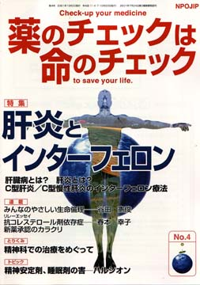

No.4 特集 肝炎とインターフェロン 2003年11月 第2刷発行 （絶版）
肝臓病は、50歳代から60歳代の男性を襲うことの多い病気の代表。この年代の人の死因としては、心臓病よりも肝臓病のほうが多い程です。
慢性になり肝硬変や肝がんになる可能性があるのは、血液によって感染するＢ型とＣ型肝炎。すでに慢性肝炎や肝硬変、肝がんになっている人も含め、肝炎ウイルス保有者（キャリア）は300万〜400万人に達しますが、慢性肝炎がないキャリアだけの人は肝硬変や肝がんにならない人の方が多いのです。
輸血や注射器の共用などの機会に血液によって感染しますが、日常生活でキャリアの人や慢性肝炎の人と接するくらいでは、感染はしません。
この特集では、肝臓の役割、ウイルス肝炎の種類と症状、慢性肝炎の症状や対処の仕方、慢性肝炎の治療方法、とくに唯一といってもよい有効な可能性のある薬剤インターフェロンの効果と害、正しい使い方に焦点をあてて解説しましょう。
（絶版）
もくじ
■メッセージ
別府 宏圀医師 （医薬品・治療研究会代表、TIP『正しい治療と薬の情報』編集長）
特集 肝炎
■肝臓病とは？
■肝炎とは？
■C型肝炎
■C型慢性肝炎のインターフェロン療法
連載
■リレーエッセイ 抗コレステロール剤依存症
■新薬承認のカラクリ
インターフェロンのC型慢性「非活動性」肝炎への使用に根拠はあるか？
■みんなのやさしい生命倫理 ４
プラセボの生命倫理（３） 同等性試験
■Coffeeブレイク
宣伝に騙されないために（１）「キューピーコーワi」
■映画 『インサイダー』『シビル・アクション』『エリン・ブロコビッチ』
■行ってきました 医療情報の公開・開示を求める会
とりくみ
■医師（医療機関）とのつき合い方−NPOJIPへの相談事例から
精神科での治療をめぐって
セカンドオピニオンにより転院、治癒するまで
■読者の声
・「キネダック中止、その後」
・「先手の情報源として」
・「頭の体操になります」 など
トピック
■抗不安剤、睡眠剤の害
世紀の医薬品スキャンダル―ハルシオン
提言
■NPOJIPの提言
目先の効果にとらわれない、本物の価値評価を
■高血圧用薬剤のリスト
■NPOJIP書籍紹介
■出版書籍申込み用紙
■読者の意見／感想用紙
■編集後記
病院でよく聞く言葉
（特集にちなんだ言葉を簡潔に解説）忙しい人はまずここから
○GOT、GPT −肝細胞の傷みをチェック
○検査の感度 −目的ごとに使い分け
○ウイルス性肝炎 −慢性化はがんの危険
○ウインドウ期 −輸血感染症の検査に死角
○輸血後肝炎 −ウイルスチェックで減少
○ウイルスマーカー −抗体などで感染を知る
○腫瘍マーカー −肝臓がんなら２種有用
○偽陽性 −一度の検査に一喜一憂せずに
○多臓器不全 −早期の診断・治療が大切
（日本経済新聞に浜六郎が掲載していたものを改変。加筆、新しく追加したものを含む）
トピックから
抗不安剤、睡眠剤の害 世紀のスキャンダル―ハルシオン
私はこのハルシオン事件を世界的規模で起きた、今世紀の大きな医薬品のスキャンダルのひとつと呼びたい。あまりにも解明されるのが遅すぎた。患者に対する安全性を支えるすべての機構、すなわち「信頼のシステム」を根底から危うくしたという点で、これはまさにスキャンダルである。 −MNGデュークス―
世界的に信頼の高い「医薬品の副作用大辞典」を長年編集してこれられた臨床薬理学者のMNGデュークス博士は、1991年10月14日に放映されたBBCのドキュメンタリー番組「ハルシオンの悪夢」（日本ではNHK衛星TVで放映）で、このように述べています。
一般に精神安定剤とか、単に安定剤と呼ばれている睡眠剤や抗不安剤は、確かに必要な人がいますが、それ以上に安易に使用され乱用されがち。中でもハルシオンは乱用されやすい薬剤です。
1980年代から90年代前半にかけて、ハルシオンがなぜ欧米諸国で禁止され、なぜ各国の医薬品情報誌が問題にしているかについて、経過を簡単に述べておきます。本誌の提携誌であるTIP誌ではすでに10年前の1991年11月号に詳しく紹介しています。
射殺事件で30億円の和解金
この問題が世界的関心を呼んだそもそもの発端は、米国での事件です。
（以下、引用省略）
詳しくは本誌で。
（絶版）